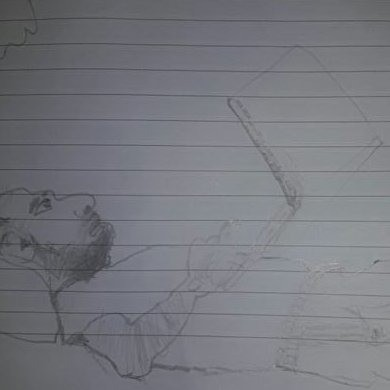

An iOS app for medication adherence with customizable reminders, inventory tracking, and emergency contact alerts. Features dark mode, multiple language support, and upcoming caretaker access capabilities.

Hi, I'm Saltuk
Welcome to my page!
I'm a software engineer helping companies implement identity and access management solutions with Auth0 in my day job. I have helped hundreds of developers get started with and adopt Auth0.
In my spare time you can find me solving chess puzzles and crafting mobile and web apps in healthcare domain.
Away from the keyboard, I share life in MK with my wife and kids. Most evenings you'll find me stretching my legs on long walks with my family.
Apps I'm Working On
Recent OSS Contributions
An mdBook of runnable Rust examples covering essentials, patterns, and algorithms that distills idiomatic techniques into digestible snippets.
A CLI tool that encrypts files into Base64 blobs or steganographic PNGs, complete with carrier image support and per-run tuning.
A serverless watcher that polls your IdP certificate, refreshes the AWS OIDC thumbprint automatically, and ships notifications via CloudWatch or Slack.